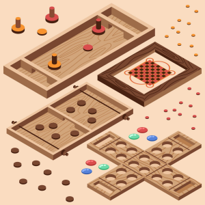

Dara game night experience
About Dara
"Dara" is an ancient strategy game that originated in West Africa long before the proliferation of modern board games. This game, often referred to as "Dara" or "Draughts," stands as one of the most notable examples of how games can transcend borders and cultures, carrying with them a rich historical heritage and intellectual challenges. The history of "Dara" dates back centuries, and its strategic complexity continues to captivate players of all ages.
